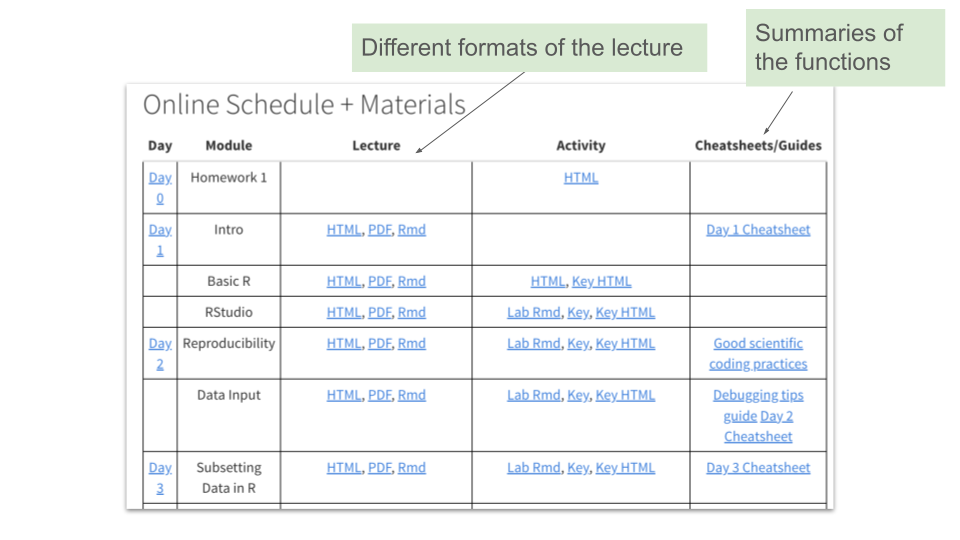

Chapter 2 DaSEH Infrastructure
2.1 Learning Objectives
In this chapter we will discuss the overall infrastructure of the DaSEH Project, which includes:
- The DaSEH website
- Methods for learners to provide feedback
- The DaSEH GitHub repository
2.2 DaSEH Website
The DaSEH website describes the mission of the DaSEH project, information for learners to apply to participate, a summary of how the course works, links to our learning content, and links to additional resources.
It is built using R Markdown on GitHub at this repository: https://github.com/fhdsl/daseh and includes Google Forms to gather various information from potential participants or those with interest or feedback.
Our landing page describes details about the idea for DaSEH. New applicants interested in participating can apply on our Apply tab.
Links to all of our learning modules (including lab activities and slides) can be found on the DaSEH website on the on the Course content tab on the Materials + Schedule page.
We also include links to all the data used in the course as well as additional data that could be used for projects our extra practice on our data page.
To help users navigate challenges, we have a page to assist with common errors on our Error FAQ page
To provide extra resources to help learners, we also have a Resources page under our Support tab where one can find extra help, cheatsheets, and videos of our previous lectures.
2.2.1 Contact Info
The contact page on the website contains a contact email that may be used to send a message to DaSEH to ask a question or provide suggestions.
2.2.2 Feedback
We are continually striving to make our content better. Please contact us on our feedback form if you have ideas for suggestions for the project.
Also please let us know if you notice typos or errors, or if you are interested in getting involved.
2.2.3 Survey
There is also a survey available on our website that allows us to do research on DaSEH resource use.
The survey should take no more than 10 minutes to complete. Your feedback helps us learn more about how to improve our resources. Part of this includes getting a better understanding of who is using our resources and how so that we can better design our materials. We would greatly appreciate you filling it out if you have the time!
2.2.4 Materials
We have the following modules on various topics related to data science for environmental public health.
Each one has lecture slides built using ioslides and as well as lab activities built using R Markdown.
The rendered version of the slides, as well as the raw Rmd file are available on the website or our GitHub repository. In addition, the rendered and raw versions of the both the lab and the lab key are also available.
We also include cheatsheets so that learners can review the functions that they learned that day.

- An Introduction to R
This module includes the history of how R came to be and how it differs from other options like Python or Stata. It also includes how students should anticipate the experience of learning in the course and suggestions for how to learn. It also introduces jargon such as variable, row, column, object.
This module does not have a lab associated with it.
- Basic R
This module includes how to assign objects, how to create vectors, and how to perform simple calculations.
The lab activity which is just an html webpage (as learners are not yet introduced to Rmd files) involves performing simple mathematical operations, assigning vectors, and checking the class and length of vectors.
- RStudio
This module includes a tour of RStudio, how to write code that can be saved or how to write interactive code, for instance for installing a package where the user may have to answer questions.
The lab activity involves knitting the Rmd file, running code chunks in the Rmd file, running all previous chunks, creating new chunks, and adding headers.
- Reproducibility
This module introduces concepts related to repeatability, reproducibility, and replicability. It introduces best practices for improving transparency in our code.
The lab activity features tasks like cleaning the environment, using the set.seed() function to generate the same random numbers each time, and using the sessionInfo() function to list packages and versions used.
- Data Input
This module describes how to import data using point-and-click methods within RStudio as well as through using functions of the readr package. We cover import of csv files and other delimited files like tab delimited files, as well as tools for importing excel files and SAS, SPSS, and Stata files. We also cover methods for checking your imported data.
The lab activity covers using the point-and-click option within RStudio and using code with readr.
- Data Subsetting
This module includes information about how to access specific parts of our data that we are interested including using options to select for specific columns or filter for specific rows. In doing so we cover and and or logic for applying conditions for filtering. We also cover renaming columns (using rename from the dplyr package and clean_names from the janitor package) and best practices for naming columns, as this can impact our ability to subset our data. We also discuss why pulling the data withing a column of a data frame as a vector is often needed for mathematical operations. In addition we cover how to arrange data based on a specific order of interest, how to remove columns, and how to create columns using the mutate() function.
The lab activity covers functions like rename(), rename_with(), pull(), select(), filter() so that learners can practice renaming columns, pulling out the vector version of columns, selecting specific columns, and filtering data based on thresholds or other conditions of specific columns. Learners also practice creating new columns with mutate().
- Data Summarization
This module covers how to apply mathematical functions to get summary statistics from data including, mean, standard deviation, range, max, and min. We show how we can pull the data out as a vector to use these functions or we can use the summarize() function on columns of a data to create a new data frame with summary statistics. We also talk about the summary() function to find quantiles of data quickly.
In the lab activity, learners find the dimensions of the data, use the count function to summarize the data, use pull and mathematical functions like sum to calculate summaries of columns, as well as use the summarize() function to summarize the data.
- Data Cleaning
This module covers how to find and work with missing data using the naniar package and count, how to recode missing data or recode data as NA, how to recode specific values of a column or create a new column based on conditions of other columns using the case_when() function. We also cover how to separate or unite columns and how to use stringr functions to help modify values or find specific values based on patterns within the values as opposed to perfect matches.
In the lab activity, learners evaluate the missing data within a dataset and recode data within a dataset that has many different values for the same measurement. For example, “n, N, and”No” to indicate no exposure.
- Manipulating Data
This module covers how to rearrange data so that it is either in long or wide format. We discuss how wide format can be useful for human interpretation and how long format is useful for R to use the data for analyses and data visualizations. We also discuss how to join different datasets together and describe why one might want to do this.
In the lab activity, learners use functions like pivot_longer and pivot_wider to change the shape of a dataset. They also practice doing joins of datasets together and comparing how the different joining functions work.
- Intro to Data Visualization
This module gives learners a taste of making data visualizations by using the point-and-click option of the esquisse package so that learners can quickly attempt data visualizations and get the code for generating such visualizations.
In the lab activity, learners get to try out creating different plots with esquisse.
- Data Visualization
This module dives deeper into best practices for data visualization, how to make a ggplot2 plot, and more customization options for creating data visualizations such as using themes, how to spot common issues in visualizations and fix them, as well as how to make plots interactive or how to combine plots using other packages like plotly and patchwork.
In the lab activity, learners practice making plots directly with ggplot2 and practice applying new themes to their plots and faceting their plots.
- Factors
In this module learners discover why factors are a unique type of data that requires special care to make summaries, data analysis results, and visualizations show data in the proper order. We show how to use the forecats package to reorder a factor variable based on the values of another variable.
In the lab activity, learners convert a variable to a factor class and specify new levels for the variable. They also discover how this changes the order of the variable values within data summaries and plots, as compared to the data just being a categorical variable instead of a factor.
- Statistics
In this module, we describe how statistical tests like t-tests, correlation, and regression are performed within R. We do not focus on the statistical interpretation, but rather how one can use R tools to perform statistical test and get the results.
In the lab activity, learners perform a correlation test between two vectors, perform a t-test, and perform regressions (including a logistic regression).
- Data Output
In this module, learners discover that they can save their processed data as RDS (R native) or csv files so that they don’t have to rerun processing on data (especially if it is large) or if they want to share data with others.
In the lab activity, learners write a csv and RDS file as well as read back in an RDS file.
- Functions
In this final module, learners discover the power of writing their own functions. They also learn about using the apply functions and across() function to apply the same function across different columns within a data frame. We discuss why using less repetitive code can improve the quality and efficiency of their code.
In the lab activity, learners create their own simple functions and use the across function to summarize different columns of a dataset, as well as apply a new function on the specific columns of dataset.
2.3 DaSEH GitHub Organization
GitHub is a website and cloud service that enables developers to store, manage, and track changes to their code. DaSEH uses GitHub for both development and distribution purposes. Users have complete access to all DaSEH course materials at our course and website repository.
This diagram explains the folder structure of our materials:
![The folders on github of our resources, it shows that the main folders of interests are the data folder, which has all the data from the course, and the modules folder which has all the labs, lectures, and homework content, in addition, most of the free files make up the website pages, beyond that there are other folders that help in creating the website or rendering the content, including the docker folder for creating the environment to render everything on GitHub, the github workflows folder has files for building the website from the OTTR project, the docs, site_libs, and help_files folders have files from rendering, the images folder has images for the course and website content, the resources plage has files for helping wwith settings for rendering, like the dictionary for checking spelling, the scripts page has scripts for automating aspects like making lab files for students without the answer form the key](02-daseh_infrastructure_files/figure-html/1vCiMPvvsdwQjiMWjf0YuSpTkG0DGXsy1614cRiFc7ns_g3b1c31cfa63_0_80.png)
2.4 Data
All of the data used in the modules are also included in the GitHub repository within the data folder. This data can be reused separately outside of our our module materials for other uses.
To use the DaSEH data, you can either:
- Download the full DaSEH GitHub repository and find the data in the folder or directory called data.
- Directly download individual files by searching through our data directory on GitHub, clicking on a data file and the clicking the download raw file button.

Information about the which modules the data is used in and information about the data sources can be found here: https://daseh.org/data.html. This page also includes other relevant datasets which can be used to develop or adapt course materials, such as for homework assignments, extra practice, or projects.
2.4.1 Adapting materials
If you are interested in creating a similar website from our course materials or you want to take our lecture slides and adapt them, you do either of the following:
- Download the full DaSEH GitHub repository and find the file ending in .Rmd in the folder or directory called Module to copy paste our code and slide comments.
Different slides are indicated by the double hashtag ## in the document on a new line.
- Directly download individual files by searching through our module directory on GitHub, clicking on a data file and the clicking the download raw file button.
 All illustrations
All illustrations